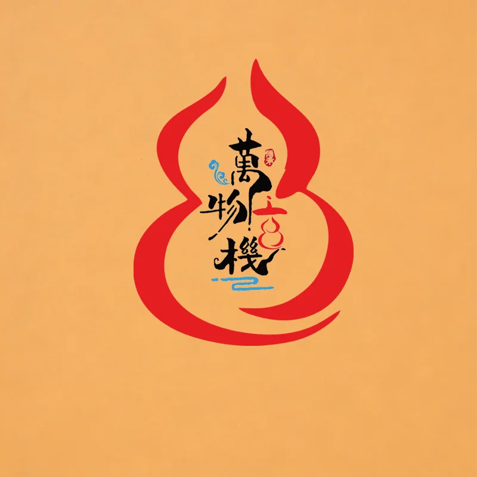

推 算 中 …
☰
☱
☲
☳
☷
☶
☵
☴

数字体系起卦工具
基于駱高山《玄机妙数》和《数绎乾坤》体系排盘
起卦记录 ▾
起卦记录 ▾
导出PDF
纯中文
中英
English
导出PDF
📢 微信：
LFC76876
领取数字体系高维免费课程
⚠ 温馨提示：本软件为初级测试版本，目前只作为起卦作用，大部分功能正在开发中，敬请期待……
即时起卦
生辰八字卦
日时起卦
报数起卦
骰子起卦
扑克牌起卦
自动时辰
子时
丑时
寅时
卯时
辰时
巳时
午时
未时
申时
酉时
戌时
亥时
男
女
综合
事业
财运
婚姻
健康
学业
自定义
起 卦
现在
保存记录
未婚看姻缘
已婚看感情
看离婚
农历：
--
日数：
--
时辰：
--
—
男
女
综合
事业
财运
婚姻
健康
学业
自定义
起 卦
保存记录
未婚看姻缘
已婚看感情
看离婚
?
?
掷骰子
男
女
综合
事业
财运
婚姻
健康
学业
自定义
起 卦
保存记录
未婚看姻缘
已婚看感情
看离婚
点击「掷骰子」
?
?
抽 牌
男
女
综合
事业
财运
婚姻
健康
学业
自定义
起 卦
保存记录
未婚看姻缘
已婚看感情
看离婚
点击「抽牌」随机抽取两张
--
—
--
先天
--
—
--
后天
内（自己）：
--
外（事情）：
--
日历
公历
农历
日期
年
月
日
时辰
未知
子时 23-1点
丑时 1-3点
寅时 3-5点
卯时 5-7点
辰时 7-9点
巳时 9-11点
午时 11-13点
未时 13-15点
申时 15-17点
酉时 17-19点
戌时 19-21点
亥时 21-23点
排 八 字
保存记录
今天
性别
男
女
生 辰 八 字 卦
农历：
--
八字：
--
历史记录
清空全部
收起 ▲
起卦记录 ▾
即时起卦记录
清空全部
收起 ▲
保存记录
取消
保存
保存记录
取消
保存
相生
木
→
火
→
土
→
金
→
水
→
木
相克
金
→
木
→
土
→
水
→
火
→
金